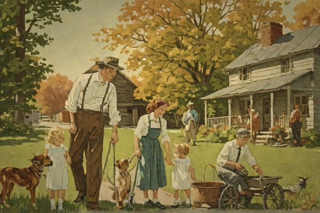

Chapter One · Skills 01–06Water
Storing, finding and cleaning the one thing you cannot live without
- Storing a Year's Supply of Water
- Catching Rainwater from Your Roof
- Making Water Safe: Boil, Bleach, or Sun
- The Bucket Sand Filter
- Fresh Water from Seawater
- Gathering Water from Air and Dew